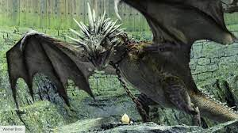

My name is Gabriel and I am an undergraduate student here at Northwest majoring in Cyber Security. I graduate this December and am currently applying for jobs for once I graduate. I enjoy videogames and reading. My favorite game is Tom Clancy's Rainbow Six: Siege. For work, I am the Makerspace manager at NWMSU. I give students access to VR, 3D-Printers, and more. I am also the TA for Building Blocks of Theoretical Computers Science. My boss for that TA is a crazy old man, super smart but always wears Hawaiian Tshirts and went to Princeton. I also work IT for Nucor Steel Mill in Maryville.
I like HP&TGOF because it is part of the HP series, which is obviously great and a childhood fav of mine. Read through those books in middle school which was phenomenal. Furthermore, I remember the dragon CGI being really good. Especially for the time period. CGI still isn't perfect but is nearly seamless and for the time the CGI in HP was absolutely great. It just was a stunning visual for a movie and coupled with the story -- unmatched in quality.
